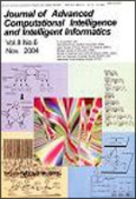

Research | Teaching | Publications | Books | Misc |
|
 ResearchGate Google Scholar |
Dr.
Daniel Berrar Professor School of Liberal Arts and Sciences Musashi University 1-26-1 Toyotamakami, Nerima-ku Tokyo, Japan 176-0011 Email: daniel.berrar[at]cc.musashi.ac.jp |
Research
My area of research is machine learning. I am particularly interested in the theory of model evaluation and selection and the reproducibility of computational experiments. Potential applications of my work can be found in various fields that use machine learning for data analysis and knowledge extraction from high-dimensional data.Teaching
Spring semester 2025 at Musashi UniversityP1732 Topics in Business Data Science 1 (Introduction to Machine Learning)
P1742 Topics in Business Data Science 2 (Introduction to Machine Learning)
P1712 Topics in Business Data Science 1 (Programming in R)
P1722 Topics in Business Data Science 2 (Programming in R)
Publications
2025
Berrar D., Davis J., Lopes
P., and Dubitzky W. (2019) Guest editorial: special issue on
machine learning in soccer. Machine Learning, to appear.
Berrar D. (2025) Cross-validation. 2nd Edition of Encyclopedia of Bioinformatics and Computational Biology, Volume 1, Elsevier, pp. 638-644. [preprint]
Berrar D. (2025) Performance measures for binary classification. 2nd Edition of Encyclopedia of Bioinformatics and Computational Biology, Volume 1, Elsevier, pp. 645-662.[preprint]
Berrar D. (2025) Introduction to the non-parametric bootstrap. 2nd
Edition of Encyclopedia of Bioinformatics and Computational Biology,
Volume 1, Elsevier, pp. 339-348.[preprint]
Berrar D. (2025) Bayes' theorem and naive Bayes classifier. 2nd
Edition of Encyclopedia of Bioinformatics and Computational Biology,
Volume 1, Elsevier, pp. 483-494.[preprint]
2024
Berrar D.(2024) Estimating the replication
probability of significant classification benchmark experiments.
Journal of Machine Learning Research 24-0158:1-42. [paper]
Berrar D., Lopes P., and Dubitzky, W.
(2024) A data- and knowledge-driven framework for developing
machine learning models to predict soccer match outcomes.
Machine Learning 113:8165-8204. [paper]
[2023
Soccer Prediction Challenge]
2023
Cross J., Berrar D., Watson I., Smith R. (2023)
The UK-Japan Engineering Education League
(UKJEEL) Workshop: Rationale, Goals, and Lessons Learned. Proc.
71st Annual Conference of
Japanese Society for Engineering Education, Hiroshima, Japan, 6-8
Sep. 2023, pp. 1-4.
2022
Berrar D. (2022) Using p-values for the comparison of classifiers over multiple data sets: pitfalls and alternatives. Data Mining and Knowledge Discovery 36:1102-1139. [link]
Quinn G.A., Abdelhameed A., Banat I.M., Berrar D., Doerr S.,
Dudley E., Francis L.W., Gazze S.A., Hallin I., Matthews P., Swain
M.T., Whalley R., and van Keulen G. (2022) Complimentary protein
extraction methods increase the identification of the Park Grass
Experiment metaproteome. Applied Soil Ecology.
2021
Wiwatcharakoses C. and Berrar D. (2021) A self-organizing incremental neural network for continual supervised learning . Expert Systems with Applications 185:115662.Berrar D. and Dubitzky W. (2021) Deep Learning in Bioinformatics and Biomedicine. Editorial, Special issue in Briefings in Bioinformatics.
2020
Craven H.M., Bonsignore R., Lenis V., Santi N., Berrar D., Swain M., Whiteland H.L., Casini A., Hoffmann K.F. (2020) Identifying and validating the presence of Guanine-Quadruplexes (G4) within the blood fluke parasite Schistosoma mansoni. BioRxiv 2020.09.09.289975. (to appear in PLoS Neglected Tropical Diseases)
Wiwatcharakoses C. and Berrar D. (2020). SOINN+, a self-organizing incremental neural network for unsupervised learning from noisy data streams. Expert Systems with Applications Vol. 143. [link]
2019
Wiwatcharakoses C. and Berrar D. (2019) Self-organizing incremental neural networks for continual learning. Proceedings of the 28th International Joint Conference on Artificial Intelligence (IJCAI 2019), Macao, China, 2019, pp. 6476-6477.
Berrar D. and Dubitzky, W. (2019) Should significance testing be abandoned in machine learning? Intl. Journal of Data Science and Analytics 7(4):247-257.
Berrar D., Lopes P., Davis J., and Dubitzky W. (2019) Guest editorial: special issue on machine learning for soccer. Machine Learning 108(1):1-7.
Berrar D., Lopes P., and Dubitzky, W. (2019) Incorporating domain knowledge in machine learning for soccer outcome prediction. Machine Learning 108(1):97-126.
Dubitzky, W., Lopes P., Davis J., and Berrar D. (2019) The Open International Soccer Database for machine learning. Machine Learning 108(1):9-28.
2018
Geyer K.K., Munshia S.E., Vickers M., Squance M., Wilkinson T.J., Berrar D., Chaparroe C., Swain M.T., Hoffmann K.F. (2018) The anti-fecundity effect of 5-azacytidine (5-AzaC) on Schistosoma mansoni is linked to dis-regulated transcription, translation and stem cell activities. International Journal for Parasitology: Drugs and Drug Resistance 8(2):213−222.
Berrar D. (2018) Introduction to the non-parametric bootstrap. Encyclopedia of Bioinformatics and Computational Biology, Volume 1, Elsevier, pp. 766-773.
Berrar D. (2018) Cross-validation. Encyclopedia of Bioinformatics and Computational Biology, Volume 1, Elsevier, pp. 542-545.
Berrar D. (2018) Performance measures for binary classification. Encyclopedia of Bioinformatics and Computational Biology, Volume 1, Elsevier, pp. 546-560.
Berrar D. (2018) Bayes' theorem and naive Bayes classifier. Encyclopedia of Bioinformatics and Computational Biology, Volume 1, Elsevier, pp. 403-412.
2017
Berrar D. and Dubitzky W. (2017) On the Jeffreys-Lindley paradox and the looming reproducibility crisis in machine learning. Proceedings of the 2017 IEEE International Conference on Data Science and Advanced Analytics (DSAA2017), Tokyo, Japan, pp. 334-340. [link]
Berrar D., Lopes P., and Dubitzky W. (2017) Caveats and pitfalls in crowdsourcing research: the case of soccer referee bias. International Journal of Data Science and Analytics, 4(2):143-151. [link]
Berrar D. (2017) Confidence curves: an alternative to null hypothesis significance testing for the comparison of classifiers. Machine Learning. Volume 106, Issue 6, pp. 911–949. [link]
2016
Berrar D. (2016) On the noise resilience of ranking measures. In: Hirose A., Ozawa S., Doya K., Ikeda K., Lee M., Liu D. (eds.) Neural Information Processing. ICONIP 2016. Lecture Notes in Computer Science, Vol. 9948, Springer, pp. 47-55. doi: 10.1007/978-3-319-46672-9_6. [link]
Berrar D. (2016) Learning from automatically labeled data: case study on click fraud prediction. Knowledge and Information Systems 46(2):477-490. [link]
2014
Berrar D. (2014) An empirical evaluation of ranking measures with respect to robustness to noise. Journal of Artificial Intelligence Research 49:241-267. [pdf]Zheng H., Dubitzky W., Hu X., Hao J.-K., Berrar D., Cho K.-H., Wang Y., Gilbert D.R. (eds.) Proc. 2014 IEEE International Conference on Bioinformatics and Biomedicine (BIBM14), Belfast, United Kingdom, November 2-5, 2014. IEEE 2014, ISBN 978-1-4799-5669-2. [link]
Oentaryo R., Lim E.P., Finegold M., Lo D., Zhu F., Phua C., Cheu E.Y., Yap G.E., Sim K., Nguyen M.N., Perera K., Neupane B., Faisal M., Aung Z., Woon W.L., Chen W., Patel D., and Berrar D. (2014) Detecting click fraud in online advertising: a data mining approach. Journal of Machine Learning Research 15:99-140. [pdf]
Berrar D. and Schuster A. (2014) Computing machinery and creativity: lessons learned from the Turing test. Kybernetes 43(1):82?91. [link]
Schuster A. and Berrar D. (2014) Towards nature-inspired modularization of artificial neural networks via static and dynamic weights. Proc. 1st International Aizu Conference on Biomedical Informatics and Technology (ACBIT2013), Aizu-Wakamatsu, Japan, 16-17 September 2013, pp. 219-234. [pdf]
2013
Berrar D., Konagaya A., and Schuster A. (2013) Turing test considered mostly harmless. New Generation Computing 31(4):241-263. [link]
Berrar D. and Lozano A. (2013) Significance tests or confidence intervals: which are preferable for the comparison of classifiers? Journal of Experimental and Theoretical Artificial Intelligence 25(2):189-206. [link]
Berrar D. and Dubitzky W. (2013) Bootstrapping. In: Dubitzky W., Wolkenhauer O., Cho K.-H., Yokota H. (eds.) Encyclopedia of Systems Biology, Springer, New York, pp. 158-163.
Berrar D. and Dubitzky W. (2013) Overfitting. In: Dubitzky W., Wolkenhauer O., Cho K.-H., Yokota H. (eds.) Encyclopedia of Systems Biology, Springer, New York, pp. 1617-1619.
Berrar D. and Dubitzky W. (2013) Unsupervised learning. In: Dubitzky W., Wolkenhauer O., Cho K.-H., Yokota H. (eds.) Encyclopedia of Systems Biology, Springer, New York, pp. 1122-1123.
Berrar D. and Dubitzky W. (2013) Supervised learning. In: Dubitzky W., Wolkenhauer O., Cho K.-H., Yokota H. (eds.) Encyclopedia of Systems Biology, Springer, New York, p. 1122.
Berrar D. and Dubitzky W. (2013) Decision tree. In: Dubitzky W., Wolkenhauer O., Cho K.-H., Yokota H. (eds.) Encyclopedia of Systems Biology, Springer, New York, 2013, pp. 551-555.
2012
Berrar D. and Flach P. (2012) Caveats and pitfalls of ROC analysis in clinical microarray research (and how to avoid them). Briefings in Bioinformatics 13(1):83-97. [link]McGeough C.M., Berrar D., Wright G., Mathews C., Gilmore P., Cunningham R.T., and Bjourson A.J. (2012) Killer immunoglobulin-like receptor and human leukocyte antigen-C genotypes in rheumatoid arthritis primary responders and non-responders to anti-TNF-alpha therapy. Rheumatology International; doi:10.1007/s00296-011-1838-6. [pdf]
Berrar D. (2012) Revisiting the Turing test from a statistical angle. International Symposium on Soft Computing, Tokyo, Japan, 8-9 November 2012, pp. 1-4.
Berrar D. (2012) Random forests for the detection of click fraud in online mobile advertising. Proc. 1st International Workshop on Fraud Detection in Mobile Advertising. In conjunction with the 4th Asian Conference on Machine Learning (ACML12), 2012, pp.1-10. [pdf][Competition runner-up award]
Berrar D. (2012) Null QQ plots: a simple graphical alternative to significance testing for the comparison of classifiers. Proc. 21st Intl. Conference on Pattern Recognition (ICPR12), Tsukuba, Japan, pp.1852-1855.
Berrar D., Konagaya A., and Schuster A. (2012) Can machines make us think? In memory of Alan Turing (1912-1954). 26th Annual Conference of the Japanese Society for Arti?cial Intelligence, 3P23P2-IOS-2b-2. [pdf][Best Paper Award at JSAI12]
2011
Schuster A. and Berrar D. (2011) The omnipresent computing menace to information society. Journal of Advanced Computational Intelligence and Intelligent Informatics 15(7):786-792. [pdf]Berrar D. and Ohmayer G. (2011) Multidimensional scaling with discrimination coefficients for supervised visualization of high-dimensional data. Neural Computing and Applications 20(8):1211-1218. [link]
Berrar D. and Schuster A. (2011) Editorial: Omnipresent intelligent computing \96 new developments and societal impact. Special issue in the Journal of Advanced Computational Intelligence and Intelligent Informatics, Fuji Technology Press, 15(7):785. [link]
2010
Berrar D., Sato N., and Schuster A. (2010) Quo vadis, artificial intelligence? Special issue "Artificial Intelligence in Neuroscience and Systems Biology: Lessons Learnt, Open Problems, and the Road Ahead" in Advances in Artificial Intelligence, Article ID 629-869, pp. 3-12. [pdf]Deligianni E., Pattison S., Berrar D., Ternan N.G., Haylock R.W., Moore J.E., Elborn J.S., and Dooley J.S.G. (2010) Pseudomonas aeruginosa cystic fibrosis isolates of similar RAPD genotype exhibit diversity in biofilm forming ability in vitro. BMC Microbiology 10:38. [pdf]
Graham J.E., McGilligan V.E., Berrar D., Leccisotti A., Moore J.E., Bron A.J., and Moore T.C.B. (2010) Attitudes towards diagnostic tests and therapies for dry eye disease. Ophthalmic Research 43:11-17. [link]
Berrar D. (2010) Adjustment for multiple hypotheses testing in comparative classification studies. 2nd Asian Conference on Machine Learning (ACML10), Tokyo, Japan, 8-10 November 2010. [link]
Berrar D., Sato N., and Schuster A. (2010) Editorial: Artificial Intelligence in Neuroscience and Systems Biology: Lessons Learnt, Open Problems, and the Road Ahead. In special issue in Advances in Artificial Intelligence, Hindawi, pp. 1-2. [pdf]
2008
McCann M.J., Gill C.I., Linton T., Berrar D., McGlynn H., and Rowland I.R. (2008) Enterolactone restricts the proliferation of the LNCaP human prostate cancer cell line in vitro. Molecular Nutrition and Food Research 52(5):567-580. [link]2007
Temanni M.R., Nadeem S.-A., Berrar D., and Zucker J.-D. (2007) Aggregating abstaining and delegating classifiers for improving classification performance: an application to lung cancer survival prediction. 8th Intl. Conference on the Critical Assessment of Microarray Data Analysis (CAMDA07), Valencia, Spain, 12-14 December 2007.
Conant E.K., Berrar D., Bjourson A.J., and Downes C.S. (2007) Comparing Y chromosome haplogroup frequencies and surnames of Norse and Irish origins in men in Northern Ireland. Ulster Medical Journal 76 (1):55. [link]
Berrar D., Granzow M., and Dubitzky W. (2007) Introduction to genomic and proteomic data analysis. In Dubitzky W., Granzow M., and Berrar D. (eds.), Fundamentals of Data Mining in Genomics and Proteomics, Springer, pp. 1-37.
Dubitzky W., Granzow M., and Berrar D. (2007) Preface to Fundamentals of Data Mining in Genomics and Proteomics. In Dubitzky W., Granzow M., and Berrar D. (eds.), Fundamentals of Data Mining in Genomics and Proteomics, Springer, pp. v-x. [pdf]
Dubitzky W., Granzow M., and Berrar D. (2007) Fundamentals of Data Mining in Genomics and Proteomics, Springer, 282 pages, ISBN: 978-0-387-47508-0.
2006
Natarajan J., Berrar D., Dubitzky W., Hack K., Zhang Y., Van Brocklyn J.R., and Bremer E. (2006) Text mining of full-text journal articles combined with gene expression analysis reveals a relationship between sphingosine-1-phosphate and invasiveness of a glioblastoma cell line. BMC Bioinformatics 7:373. [pdf]Berrar D., Bradbury I., and Dubitzky W. (2006) Avoiding model selection bias in small-sample genomic data sets. Bioinformatics 22(10):1245-1250. [pdf] [corrigendum]
Berrar D., Bradbury I., and Dubitzky W. (2006) Instance-based concept learning from multiclass DNA microarray data. BMC Bioinformatics 7:73. [pdf]
Berrar D. and Dubitzky W. (2006) Neural plasma. IFIP International Federation for Information Processing, Artificial intelligence in Theory and Practice Vol. 217, Boston, Springer, pp. 159-168. [pdf]
Silva C.G., Ostropytskyy V., Loureiro-Ferreira N., Berrar D., Dubitzky W., and Brito R.M.M. (2006) P-found: A protein folding and unfolding simulation data repository. Proc. IEEE Symposium on Computational Intelligence in Bioinformatics and Computational Biology (CIBCB06), pp. 101-108. [pdf]
Bremer E., Hakenberg J., Han E.H., Berrar D., and Dubitzky W. (2006) Proc. Knowledge Discovery in Life Science Literature (KDLL 2006), Springer LNCS Series: Lecture Notes in Bioinformatics, Vol. 3886, 147 pages, ISBN: 3-540-32809-2 (conference proceedings).
2005
Berrar D., Bradbury I., Sturgeon B., Downes C.S., and Dubitzky W. (2005) Survival trees for analyzing clinical outcome in lung adenocarcinomas based on gene expression profiles: Identification of neogenin and diacylglycerol kinase alpha as critical factors. Journal of Computational Biology 12(5):534-544. [link]Natarajan J., Berrar D., Hack C.J., and Dubitzky W. (2005) Knowledge discovery in biology and biotechnology texts: A review of techniques, evaluation strategies, and applications. Critical Reviews in Biotechechnology 25:1-22. [link]
Berrar D., Stahl F., Silva C., Rodrigues J.R., Brito R.M.M., and Dubitzky W. (2005) Towards data warehousing and mining of protein unfolding simulation data. Journal of Clinical Monitoring and Computing 19:307-317. [link]
Stahl F., Berrar D., Silva C., Rodrigues J.R., Brito R.M.M., and Dubitzky W. (2005) Grid warehousing of molecular dynamics protein unfolding data. Proc. 5th IEEE Intl. Symposium on Cluster Computing and the Grid (CCGrid05), Vol.1, pp. 496-503. [pdf]
Berrar D., Sturgeon B., Bradbury I., Downes C.S., and Dubitzky W. (2005) Integration of microarray data for a comparative study of classifiers and identification of marker genes. Proc. 4th Intl. Conference on the Critical Assessment of Microarray Data Analysis (CAMDA05), Durham, North Carolina, USA, pp. 147-162. [link]
2004
O'Donoghue P., Dubitzky W., Lopes P., Berrar D., Lagan K., Hassan D., Bairner A., and Darby P. (2004) An evaluation of quantitative and qualitative methods of predicting the 2002 FIFA World Cup. Journal of Sports Sciences 22(6):513-514. [pdf preprint] [link]2003
Berrar D., Downes C.S., and Dubitzky W. (2003) A probabilistic neural network for gene selection and classification of microarray data. Proc. Intl. Conference on Artificial Intelligence (IC-AI03), Las Vegas, USA, pp. 342-349. [pdf]Berrar D., Downes C.S., and Dubitzky W. (2003) Multiclass cancer classification using gene expression profiling and probabilistic neural networks. Proc. 8th Pacific Symposium on Biocomputing, World Scientific, New Jersey/London/Singapore/Hong Kong, pp. 5-16. [pdf]
Berrar D., Sturgeon B., Bradbury I., and Dubitzky W. (2003) Microarray data integration and machine learning methods for lung cancer survival prediction. In Oral and Poster Presenters\92 Abstracts, 4th Intl. Conference on Critical Assessment of Microarray Data Analysis (CAMDA03), Durham, North Carolina, USA, pp. 43-54.
Berrar D., Dubitzky W., Granzow M. (2002) A Practical Approach to Microarray Data Analysis, Springer, Dordrecht/Heidelberg/London, 384 pages, ISBN: 1402072600.
2002
Berrar D., Dubitzky W., and Granzow M., (2002) Preface to A Practical Approach to Microarray Data Analysis. In: Berrar D., Dubitzky W., M. Granzow (eds.): A Practical Approach to Microarray Data Analysis, Springer, Dordrecht/Heidelberg/London, pp. ix-xv. [pdf]Dubitzky W., Granzow M., Downes C.S., and Berrar D. (2002) Introduction to Microarray Data Analysis. In: Berrar D., Dubitzky W., M. Granzow (eds.): A Practical Approach to Microarray Data Analysis, Springer, Dordrecht/Heidelberg/London, pp. 1-46.
2001
Berrar D., Dubitzky W., Solinas-Toldo S., Bulashevska S., Granzow M., Conrad C., Kalla J., Lichter P., and Eils R. (2001) A database system for comparative genomic hybridization analysis. IEEE Engineering in Medicine and Biology 20(4):75-83. [link]Granzow M., Berrar D., Dubitzky W., Schuster A., Azuaje F., and Eils R. (2001) Tumor classification by gene expression profiling: comparison and validation of five clustering methods. SIGBIO Newsletter Special Interest Group on Biomedical Computing of the ACM 21(1):16-22.
Dubitzky W., Granzow M., and Berrar D. (2001) Comparing symbolic and subsymbolic machine learning approaches to classification of cancer and gene identification. In Lin S. and Johnson K. (eds.): Methods of Microarray Data Analysis, Kluwer Academic Publishers, pp. 151-166. [pdf]
Dubitzky W., Berrar D., Granzow M., and Eils R. (2001) Detecting broad-band and selective correlation patters among gene expression and drug activity data. In Oral and Poster Presenters\92 Abstracts, Critical Assessment of Microarray Data Analysis (CAMDA01), Durham, North Carolina, USA, p. 1.
Berrar D., Granzow M., Dubitzky W., Stilgenbauer S., Wilgenbus K.D.H., Lichter P., and Eils R . (2001) New insights in clinical impact of molecular genetic data by knowledge-driven data mining. Proc. 2nd Intl. Conference on Systems Biology, Omnipress, pp.275-281.
Dubitzky W., Granzow M., and Berrar D. (2001) Data mining and machine learning methods for microarray analysis. In Lin S. and Johnson K. (eds.): Methods of Microarray Data Analysis, Kluwer Academic Publishers, pp. 5-22. [pdf]
Berrar D., Dubitzky W., Granzow M., and Eils R. (2001) Analysis of gene expression and drug activity data by knowledge-based association mining. In Oral and Poster Presenters\92 Abstracts, Critical Assessment of Microarray Data Analysis (CAMDA01), Durham, North Carolina, USA, p. 1.
Special issues
| Berrar D., Lopes P., Davis J., and Dubitzky W. (2024) Machine
learning in soccer. Special issue in Machine Learning. |
| Berrar D., Lopes P., Davis J., and Dubitzky W. (2018) Machine
learning for soccer. Special issue in Machine
Learning. Summary To what extent can machine learning predict the outcome of soccer matches? To answer this question, we developed the Open International Soccer Database and organized the 2017 Soccer Prediction Challenge. This special issue contains selected papers from the top-ranking participants in this data mining competition, as well as papers reporting innovative machine learning methods for soccer data analysis. |
|
|  | Berrar
D.
and Schuster A. (2011) Omnipresent
intelligent
computing - new developments and societal impact.
Special issue in the Journal of Advanced Computational
Intelligence and Intelligent Informatics, Fuji Technology
Press, 15(7):785-812. Summary When the computer revolution began in the second half of the 20th century, few could have foreseen the pervasiveness that intelligent devices would have only half a century later. Today, consumers deal with numerous computing devices providing increasingly sophisticated services. Arguably, no other invention has so profoundly impacted on daily home and work lives as the computer. The downside, however, holds the worrying realization that many artifacts of modern technology now touch on the human sphere to the point of risking an individual\92s privacy, security, and well-being. This special issue informs the research community about exciting new developments in intelligent computing, with an outlook on their societal impacts. |
| Berrar
D., Sato N., and Schuster A. (2010) Artificial
intelligence
in neuroscience and systems biology: lessons learnt,
open problems, and the road ahead. Special issue in
Advances in Artificial Intelligence, Hindawi, 120 pages. [pdf] Summary This special issue informs the research community about an exciting and stimulating relationship between artificial intelligence, neuroscience, and systems biology. The special issues provides access to many state-of-the-art theoretical and applied problems in these hugely exciting fields that are so relevant for modern science. This special issue is also intended as a platform to bridge cultural and technological gaps between these disciplines. |
Berrar D. (2004) Machine learning methods for analyzing DNA microarray data. Ph.D. thesis, University of Ulster, Northern Ireland, UK, 2004.
Berrar D. (1999) The application of artificial neural networks in hospital information systems. M.Sc. thesis ("Diplomarbeit"), University of Heidelberg, Germany, 1999. [Awarded by German Society of Medical Informatics, Biometry, and Epidemiology]
Books
 |
Ranganathan S., Nakai K., and Schonbach C. (eds.) (2018) Encyclopedia
of Bioinformatics and Computational Biology: ABC of
Bioinformatics. 2500 pages, Elsevier, ISBN:
9780128114148. Chapters by Berrar D.: Introduction to the non-parametric bootstrap. Cross-validation. Performance measures for binary classification. Bayes' theorem and naive Bayes classifier. |
| Dubitzky
W., Wolkenhauer O., Yokota H., and Cho K.-H. (eds.)
(2013) Encyclopedia
of
Systems Biology, 2100 pages, ISBN:
978-1-4419-9864-4. Berrar D. (section editor) "Artificial Intelligence and Machine Learning"
The Encyclopedia of Systems Biology is conceived as a comprehensive reference work covering all aspects of systems biology, in particular the investigation of living matter involving a tight coupling of biological experimentation, mathematical modeling and computational analysis and simulation. The main goal of the Encyclopedia is to provide a complete reference of established knowledge in systems biology \96 a "one-stop shop" for someone seeking information on key concepts of systems biology. As a result, the Encyclopedia comprises a broad range of topics relevant in the context of systems biology. The audience targeted by the Encyclopedia includes researchers, developers, teachers, students and practitioners who are interested or working in the field of systems biology. Keeping in mind the varying needs of the potential readership, we have structured and presented the content in a way that is accessible to readers from wide range of backgrounds. In contrast to encyclopedic online resources, which often rely on the general public to author their content, a key consideration in the development of the Encyclopedia of Systems Biology was to have subject matter experts define the concepts and subjects of systems biology. |
|
| Zheng H., Dubitzky W., Hu X., Hao J.K., Berrar D., Cho K.H., Wang Y., Gilbert D. (2014) Proceedings of the 2014 IEEE International Conference on Bioinformatics and Biomedicine, 2-5 November 2014, Belfast, UK. | |
| Dubitzky
W., Granzow M., and Berrar D. (eds) (2007) Fundamentals
of
Data Mining in Genomics and Proteomics, Springer, 282
pages, ISBN: 978-0-387-47508-0. Front matter [pdf] Back matter [pdf] More than ever before, research and development in genomics and proteomics depends on the analysis and interpretation of large amounts of data generated by high-throughput techniques. With the advance of computational systems biology, this situation will become even more manifest as scientists will generate truly large-scale data sets by simulating of biological systems and conducting synthetic experiments. To optimally exploit such data, life scientists need to understand the fundamental concepts and properties of the fast-growing arsenal of analytical techniques and methods from statistics and data mining. Typically, the relevant literature and products present these techniques in a form which is either very simplistic or highly mathematical, favoring formal rigor over conceptual clarity and practical relevance. Fundamentals of Data Mining in Genomics and Proteomics addresses these shortcomings by adopting an approach which focuses on fundamental concepts and practical applications. The book presents key analytical techniques used to analyze genomic and proteomic data by detailing their underlying principles, merits and limitations. An important goal of this text is to provide a highly intuitive and conceptual (as opposed to intricate mathematical) account of the discussed methodologies. This treatment will enable readers with interest in analysis of genomic and proteomic data to quickly learn and appreciate the essential properties of relevant data mining methodologies without recourse to advanced mathematics. To complement the conceptual discussions, the book draws upon the lessons learned from applying the presented techniques to concrete analysis problems in genomics and proteomics. The caveats and pitfalls of the discussed methods are highlighted by addressing questions such as: What can go wrong? Under which circumstances can a particular method be applied and when should it not be used? What alternative methods exist? Extensive references to related material and resources are provided to assist readers in identifying and exploring additional information. The structure of this text mirrors the typical stages involved in deploying a data mining solution, spanning from data pre-processing to knowledge discovery to result post-processing. It is hoped that this will equip researchers and practitioners with a useful and practical framework to tackle their own data mining problems in genomics and proteomics. In contrast to some texts on machine learning and biological data analysis, a deliberate effort has been made to incorporate important statistical notions. By doing so the book is following demands for a more statistical data mining approach to analyzing high-throughput data. Finally, by highlighting limitations and open issues Fundamentals of Data Mining in Genomics and Proteomics is intended to instigate critical thinking and avenues for new research in the field. |
|
| Bremer
E., Hakenberg J., Han E.H., Berrar D., and Dubitzky W.
(eds.) (2006) Proc.
Knowledge
Discovery in Life Science Literature (KDLL 2006),
Springer LNCS Series: Lecture Notes in Bioinformatics, Vol.
3886, 147 pages, ISBN: 3-540-32809-2 (conference
proceedings). This book constitutes the refereed proceedings of the International Workshop on Knowledge Discovery in Life Science Literature, KDLL 2006, held in Singapore in conjunction with the 10th Pacific-Asia Conference on Knowledge Discovery and Data Mining (PAKDD 2006). The 12 revised full papers presented together with two invited talks were carefully reviewed and selected for inclusion in the book. The papers cover all topics of knowledge discovery in life science data such as text mining, identification and retrieval of documents, passage retrieval, co-reference resolution, extraction of life science entities or relationships from large collections, automated characterization of biological, biomedical and biotechnological entities and processes, extraction and characterization of more complex patterns and interaction networks, automated generation of text summaries, automated construction, expansion and curation of ontologies for different domains, and construction of controlled vocabularies. |
|
| Berrar
D., Dubitzky W., and Granzow M. (eds.) (2002)
A Practical Approach to Microarray Data Analysis,
Springer, Dordrecht/Heidelberg/London, 384 pages, ISBN:
1402072600. Preface, TOC, Index [pdf] The book addresses the requirement of scientists and researchers to gain a basic understanding of microarray analysis methodologies and tools. It is intended for students, teachers, researchers, and research managers who want to understand the state of the art and of the presented methodologies and the areas in which gaps in our knowledge demand further research and development. The book is designed to be used by the practicing professional tasked with the design and analysis of microarray experiments or as a text for a senior undergraduate- or graduate level course in analytical genetics, biology, bioinformatics, computational biology, statistics and data mining, or applied computer science. "Overall, A Practical Approach to Microarray Analysis represents an invaluable resource for statisticians, bioinformaticians and mathematically talented biologists. For such readers, this book is perhaps the definitive guide to microarray analysis at present." [Review by Dr. Matt Wayland, in: Briefings in Functional Genomics and Proteomics 2(1):80-84, 2003] |
Misc
Editorial boards
BMC
Bioinformatics
Journal of
Intelligent Systems
Journal of
Advanced Computational Intelligence and Intelligent
Informatics
Co-organized workshops and conferences
Co-organizer of 9th UK-Japan Engineering Education-League Workshop, 5 September 2022, online.
Co-organizer of
the IJCAI Workshop Learning Data Representation for
Clustering, conjunction with the 29th Intl. Joint
Conference on Artificial Intelligence (IJCAI2020) and the
17th Pacific Rim International Conference on Artificial
Intelligence (PRICAI2020), January 2021, Kyoto, Japan (virtual
workshop).
Co-organizer of
8th UK-Japan Engineering Education-League Workshop,
Niigata University, Niigata, Japan, 26-27 February 2021
(virtual workshop).
Co-organizer of 7th UK-Japan Engineering Education-League Workshop, Queen Mary University, London, 5-7 September 2019.
Co-organizer of 6th
UK-Japan Engineering Education-League Workshop, Kyushu
University, Fukuoka, Japan, 3-5 September 2018.
Program co-chair of
IEEE International Conference on Bioinformatics and
Biomedicine (BIBM14),
Belfast, UK, 2-5 November 2014.
Program chair of the ESF
International
Workshop on Mining of High-Throughput Data in
Functional Genomics, University of Ulster, Coleraine,
Northern Ireland, May 8-9, 2007.
Co-chair of the International
Workshop
on Knowledge Discovery in Life Science Literature (KDLL06),
held in conjunction with the 10th Pacific-Asia Conference on
Knowledge Discovery and Data Mining (PAKDD06), Singapore,
April 9-12, 2006.
Co-chair of first meeting of the Working
Group
on Knowledge Discovery and Management, COST Action 282,
Coleraine, Northern Ireland, May 24-26, 2002.
Program committees
[134] 5th Advanced Online & Onsite Course & Symposium on Artificial Intelligence & Neuroscience (ACAIN2025), Riva del Sole Resort & SPA, Tuscany, Italy, 21-24 September 2025.[133] 11th International Conference on Machine Learning, Optimization, and Data Science (LOD2025), Riva del Sole Resort & SPA, Tuscany, Italy, 21-24 September 2025.
[132] 34th International Joint Conference on Artificial Intelligence (IJCAI2025), Montreal, Canada, 16-22 August 2025.
[131] 17th International Conference on Agents and Artificial Intelligence (ICAART2025), Porto, Portugal, 23-25 February 2025.
[130] IEEE International Conference on Bioinformatics and Biomedicine (BIBM2024), Lisbon, Portugal, 3-6 December 2024.
[129] 24th International Conference on Computational Science (ICCS2024), Malaga, Spain, 2-4 July 2024.
[128] 10th International Conference on Machine Learning, Optimization, and Data Science (LOD2024), Castiglione della Pescaia (Grosseto), Tuscany, Italy, 22-25 September 2024.
[127] 33rd International Joint Conference on Artificial Intelligence (IJCAI2024), Jeju, South Korea, 3-9 August 2024.
[126] 16th International Conference on Neural Computation (NCTA16),Porto, Portugal, 20-22 November 2024.
[125] 4th Advanced Online & Onsite Course & Symposium on Artificial Intelligence & Neuroscience (ACAIN2024), Tuscany, Italy, 22-25 September 2024.
[124] 16th International Conference on Agents and Artificial Intelligence (ICAART2024), Rome, Italy, 24-26 February 2024.
13th International Conference on Neural Computation Theory and Applications (NCTA14), Rome, Italy, 13-15 November 2023.
9th International Conference on Machine Learning, Optimization, and Data Science (LOD2023), Grasmere, Lake District, UK, 22-26 September 2023.
3rd Advanced Online & Onsite Course & Symposium on Artificial Intelligence & Neuroscience (ACAIN2023). Grasmere, Lake District, UK, 22-26 September 2023.
21nd Annual International Conference on Critical Assessment of Massive Data Analysis (CAMDA2023), Lyon, France, 26-27 July 2023.
23rd International Conference on Computational Science (ICCS2023), Prague, Czech Republic, 3-5 July, 2023.
32nd International Joint Conference on Artificial Intelligence (IJCAI2023), Cape Town, South Africa, 19-20 August 2023.
IEEE International Conference on Bioinformatics and Biomedicine (BIBM2022), 6-8 December 2022, Las Vegas, USA & Changsha, China.
21st Annual International Conference on Critical Assessment of Massive Data Analysis (CAMDA2022), Madison, USA, 11-12 July 2022.
2nd Advanced Online & Onsite Course & Symposium on Artificial Intelligence & Neuroscience. Certosa di Pontignano, Siena, Tuscany, Italy, 19-22 September 2022.
8th International Conference on Machine Learning, Optimization, and Data Science (LOD2022), Certosa di Pontignano, Siena., Tuscany, Italy, 19-22 September 2022.
22nd International Conference on Computational Science (ICCS2022), London, UK, 21-23 June 2022.
1st Advanced Online & Onsite Course & Symposium on Artificial Intelligence & Neuroscience. Grasmere, Lake District, England, UK, 4-8 October 2021.
20th Annual International Conference on Critical Assessment of Massive Data Analysis (CAMDA2021), Lyon, France, 28-30 July 2021.
IEEE International Conference on Bioinformatics and Biomedicine (BIBM2021), Houston, Texas, USA, 9-12 December 2021.
37th International Conference on Uncertainty in Artificial Intelligence. Online, 27-30 July 2021.
7th International Conference on Machine Learning, Optimization, and Data Science (LOD2021), 29 June - 2 July 2021, Grasmere, Lake District, England, UK.
30th International Joint Conference on Artificial Intelligence (IJCAI2021), Montreal, Canada, August 2021.
21st International Conference on Computational Science (ICCS2021), Krakow, Poland, 16-18 June 2021.
29th International Conference on Artificial Neural Networks (ICANN2021), Bratislava, Slovakia, 14-17 September 2021.
IEEE International Conference on Bioinformatics and Biomedicine (BIBM2020), Seoul, South Korea, 16-19 December 2020.
19th Annual International Conference on Critical Assessment of Massive Data Analysis (CAMDA2020), Montreal, Canada, 13-14 July 2020.
6th International Conference on Machine Learning, Optimization, and Data Science (LOD2020), Certosa di Pontignano, Siena, Tuscany, Italy, 19-23 July 2020.
20th International Conference on Computational Science (ICCS2020), Amsterdam, The Netherlands, 3-5 June 2020.
29th International Joint Conference on Artificial Intelligence and the 17th Pacific Rim International Conference on Artificial Intelligence (IJCAI-PRICAI2020), Yokohama, Japan, 11-17 July 2020.
IEEE International Conference on Bioinformatics and Biomedicine (BIBM19), San Diego, CA, USA, 18-21 November 2019.
28th International Conference on Artificial Neural Networks (ICANN2019), Munich, Germany, 17-19 September 2019.
5th International Conference on Machine Learning, Optimization, and Data Science, Certosa di Pontignano, Siena, Tuscany, Italy, 10-13 September 2019.
28th International Joint Conference on Artificial Intelligence (IJCAI2019), Macao, China, 10-16 August 2019.
18th Annual International Conference on Critical Assessment of Massive Data Analysis (CAMDA2019), Basel, Switzerland, 24-25 July 2019.
PAKDD Workshop on Learning Data Representation for Clustering, Macau, China, 14-17 April 2019.
19th International Conference on Computational Science (ICCS2019), Faro, Portugal, 12-14 June 2019.
11th International Conference on Agents and Artificial Intelligence (ICCART2019), Prague, Czech Republic, 19-21 February 2019.
10th International Conference on Agents and Artificial Intelligence (ICCART2018), Funchal, Madeira, Portugal, 16-18 January 2018.
IEEE International Conference on Bioinformatics and Biomedicine (BIBM18), Madrid, Spain, 3-6 December 2018.
4th International Conference on Machine Learning, Optimization and Data science (LOD2018), Volterra (Pisa), Tuscany, Italy, 13-16 September 2018.
17th Annual International Conference on Critical Assessment of Massive Data Analysis (CAMDA2018), Chicago, USA, 7-8 July 2018.
18th International Conference on Computational Science (ICCS2018), Wuxi, China, 11-13 June 2018.
10th International Joint Conference on Computational Intelligence (IJCCI2018), Seville, Spain, 18-20 September 2018.
IEEE International Conference on Bioinformatics and Biomedicine (BIBM2017), Kansas City, USA, 13-16 November 2017.
9th International Joint Conference on Computational Intelligence (IJCCI2017), Funchal, Madeira, Portugal, 1-3 November 2017.
3rd International Workshop on Machine learning, Optimization and big Data (MOD2017), Volterra (Pisa), Tuscany, Italy, 14-17 September 2017.
16th Annual International Conference on Critical Assessment of Massive Data Analysis (CAMDA2017), Prague, Czech Republic, 22-23 July 2017.
3rd IEEE International Symposium on Smart Data, 21-23 June 2017, Exeter.
17th International Conference on Computational Science (ICCS2017), Zuerich,Switzerland, 12-14 June 2017.
9th International Conference on Agents and Artificial Intelligence (ICCART2017), Porto, Portugal, 24-26 February 2017.
5th International Work-Conference on Bioinformatics and Biomedical Engineering (IWBBIO2017), Granada, Spain, 26-28 April 2017.
IEEE International Conference on Bioinformatics and Biomedicine (BIBM2016), Shenzhen, China, 15-18 December 2016.
2nd International Workshop on Machine learning, Optimization and big Data (MOD2016), Volterra (Pisa), Tuscany, Italy, 26-29 August 2016.
16th International Conference on Computational Science (ICCS16), San Diego, California, USA, 6-8 June 2016.
2016 IEEE International Conference on Big Data, 15-18 November 2016, Washington DC, USA.
15th Annual International Conference on Critical Assessment of Massive Data Analysis, Orlando, USA, 8-9 July 2016.
IEEE International Conference on Bioinformatics and Biomedicine (BIBM15), Washington DC, 9-12 November 2015.
14th International Conference on Critical Assessment of Massive Data Analysis (CAMDA2015), Dublin, Ireland, 10-11 July 2015.
IEEE International Conference on Systems, Man, and Cybernetics, Hong Kong, 9-12 October 2015.
International Symposium on Foundations and Applications of Big Data Analytics, Paris, France, 27-28 August 2015.
3rd International Conference on Big Data (BigData15), Santa Clara, CA, USA, 29 Oct.-1 Nov. 2015.
International Workshop on Machine Learning, Optimization and Big Data. Taormina, Sicily, Italy, 21-24 July 2015.
15th International Conference on Computational Science (ICCS15), Reykjavik, Iceland, 1-3 June, 2015.
11th International Conference on Autonomic and Autonomous Systems (ICAS15), Rome, Italy, 24-29 May 2015.
7th International Conference on Agents and Artificial Intelligence (ICAART15), Lisbon, Portugal, 10-12 January 2015.
IEEE International Conference on Bioinformatics and Biomedicine (BIBM14), Belfast, UK, 2-5 November 2014.
2nd International Conference on Big Data (BigData14), Washington DC, USA, 27-30 October 2014.
6th International Conference on Neural Computation Theory and Applications (NCTA14), Rome, Italy, 22-24 October 2014.
10th International Conference on Data Mining (DMIN14), Las Vegas, USA, 21-24 July, 2014.
13th International Conference on Critical Assessment of Massive Data Analysis (CAMDA14), Boston, USA, 11-12 July 2014.
7th Workshop on Biomedical and Bioinformatics Challenges for Computer Science (BBC14), Cairns, Australia, 10-12 June 2014.
14th International Conference on Computational Science (ICCS14), Cairns,Australia, 10-12 June, 2014.
10th International Conference on Autonomic and Autonomous Systems (ICAS14), Chamonix, France, 20-24 April, 2014.
6th International Conference on Agents and Artificial Intelligence (ICAART14), Angers, Loire Valley, France, 6-8 March 2014.
IEEE International Conference on Big Data 2013 (BigData13), Santa Clara, CA, USA, 6-9 October 2013.
IEEE International Conference on Bioinformatics and Biomedicine (BIBM13), Shanghai, China, 18-21 December, 2013.
6th Indian International Conference on Artificial Intelligence (IICAI13), Tumkur, India, 18-20 December 2013.
5th International Conference on Neural Computation Theory and Applications (NCTA13), Vilamoura, Portugal, 20-22 September 2013.
12th European Conference on Artificial Life (ECAL13), Taormina, Italy, 2-6 September 2013.
9th International Conference on Data Mining (DMIN13), Las Vegas, USA, 22-25 July, 2013.
6th Workshop on Biomedical and Bioinformatics Challenges for Computer Science (BBC13), Barcelona,Spain, 5-7 June 2013.
9th International Symposium on Bioinformatics Research and Applications (ISBRA13), Charlotte, North Carolina, USA, 20-22 May 2013.
12th International Conference on Critical Assessment of Massive Data Analysis (CAMDA13), Berlin, Germany, 19-20 July, 2013.
9th International Conference on Autonomic and Autonomous Systems (ICAS13), Lisbon, Portugal, 24-29 March, 2013.
5th International Conference on Agents and Artificial Intelligence (ICAART13), Barcelona, Spain, 15-18 February 2013.
International Symposium on Soft Computing, Yokohama, Japan, 8-9 November 2012.
21st Brazilian Symposium on Artificial Intelligence (SBIA12), Curitiba, Brasil, 20-25 October 2012.
4th International Conference on Neural Computation Theory and Applications (NCTA12), Barcelona, Spain, 5-7 October 2012.
IEEE International Conference on Bioinformatics and Biomedicine (BIBM12), Philadelphia, USA, 4-7 October, 2012.
11th International Conference on Critical Assessment of Massive Data Analysis (CAMDA12), Long Beach, USA, 13-14 July, 2012.
8th International Symposium on Bioinformatics Research and Applications (ISBRA12), Dallas, USA, 21-23 May 2012.
4th International Conference on Agents and Artificial Intelligence (ICAART12), Vilamoura, Portugal, 6-8 February 2012.
5th Indian International Conference on Artificial Intelligence (IICAI11), Tumkur, India, 14-16 December, 2011.
10th International Conference on Bioinformatics (InCoB11), Putrajaya, Malaysia, 30 November - 2 December 2011.
IEEE International Conference on Bioinformatics and Biomedicine (BIBM11), Atlanta, USA, 12-15 November, 2011.
3rd International Conference on Neural Computation Theory and Applications (NCTA11), Paris, France, 24-26 October 2011.
7th International Conference on Data Mining (DMIN11), Las Vegas, USA, 18-21 July, 2011.
10th International Conference for the Critical Assessment of Massive Data Analysis (CAMDA11), Vienna, Austria, 15-16 July, 2011.
7th International Symposium on Bioinformatics Research and Applications (ISBRA11), Huanghua, China, 27-29 May, 2011.
3rd International Conference on Agents and Artificial Intelligence (ICAART11), Rome, Italy, 28-30 January 28-30, 2011.
IEEE International Conference on Bioinformatics and Biomedicine (BIBM10), Hong Kong, China, 18-21 December, 2010.
2nd Asian Conference on Machine Learning (ACML10), Tokyo, Japan, 8-19 November 8-10, 2010.
International Conference on Neural Computation (ICNC10), Valencia, Spain, 24-26 October, 2010.
13th International Conference on Discovery Science (DS10), Canberra, Australia, 6-8 October, 2010.
20th Brazilian Symposium on Artificial Intelligence (SBIA10), S\E3o Bernardo do Campo, Brasil, 24-28 October 2010.
9th Symposium on Intelligent Data Analysis (IDA10), Tucson, USA, 19-21 May, 2010.
6th International Symposium on Bioinformatics Research and Applications (ISBRA10), Storrs, USA, 23-26 May, 2010.
2nd International Conference on Agents and Artificial Intelligence (ICAART10), Valencia, Spain, 22-24 January, 2010.
21st International Conference on Artificial Intelligence in Theory and Practice (IFIPAI10), Brisbane, Australia, 20-23 September, 2010.
9th International Conference for the Critical Assessment of Microarray Data Analysis (CAMDA09), Chicago, USA, 5-6 October 5-6, 2009.
4th Indian International Conference on Artificial Intelligence (IICAI09), Tumkur, India, 16-18 December, 2009.
5th International Conference on Data Mining (DMIN09), Las Vegas, USA, 13-16 July, 2009.
IEEE International Conference on Bioinformatics and Biomedicine (BIBM09), Washington DC, USA, 1-4 November, 2009.
8th Symposium on Intelligent Data Analysis (IDA09), Lyon, France, 31 August 31 \96 3 September, 2009.
5th International Symposium on Bioinformatics Research and Applications (ISBRA09), Florida, USA, 13-16 May, 2009.
IEEE International Conference on Bioinformatics and Biomedicine (BIBM08), Philadelphia, USA, 5-7 November, 2008.
4th International Conference on Data Mining (DMIN08), Las Vegas, USA, 14-17 July, 2008.
8th International Conference for the Critical Assessment of Microarray Data Analysis (CAMDA08), Vienna, Austria, 4-6 December, 2008.
11th International Conference on Discovery Science (DS08), Szeged, Hungary, 13-16 October, 2008.
20th International Conference on Artificial Intelligence in Theory and Practice (IFIP AI08), Milan, Italy, 7-10 September, 2008.
7th Symposium on Intelligent Data Analysis (IDA07), Ljubljana, Slovenia, 6-8 September, 2007.
7th International Conference for the Critical Assessment of Microarray Data Analysis (CAMDA07), Valencia, Spain, 13-14 December, 2007.